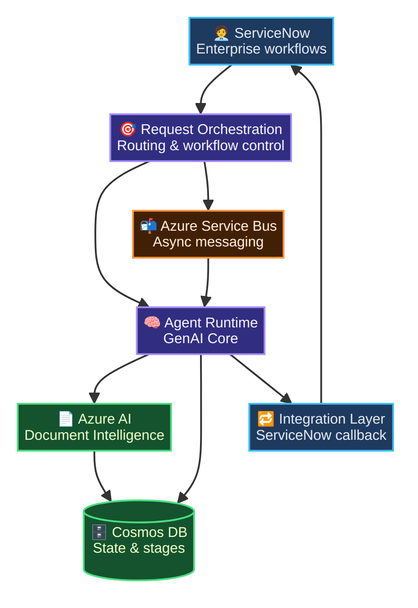
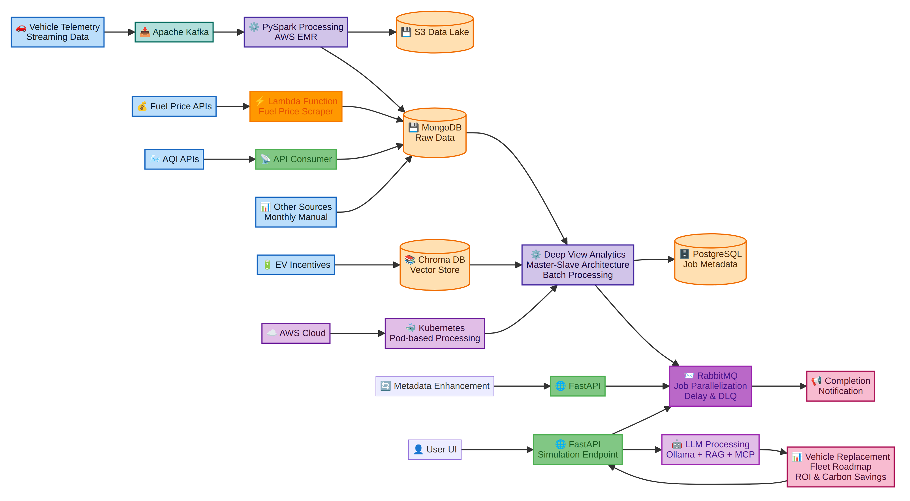
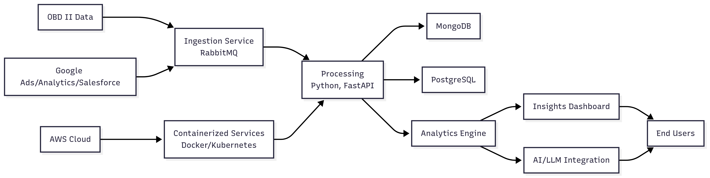
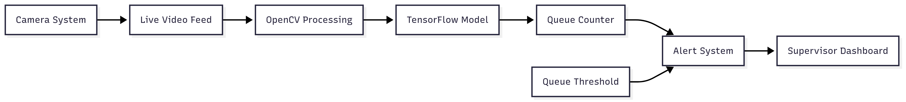
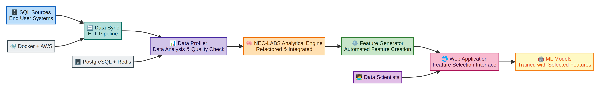
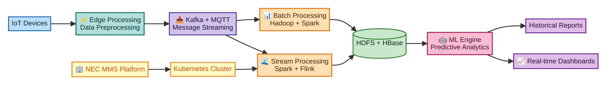
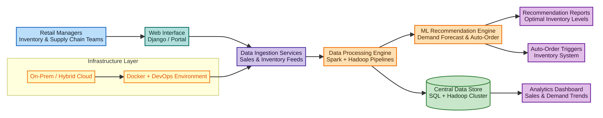

Building Enterprise AI Platforms & GenAI Systems at Scale
Designing event-driven, agent-based AI platforms for risk, compliance, and decision intelligence using Azure cloud.
Architecting production-grade AI systems with focus on scalability, observability, and enterprise adoption.
Currently Leading:
Current WorkAI-Driven Third Party Risk Management (TPRM) Platform
Enterprise GenAI platform for automating risk and compliance workflows using event-driven architecture, AI agents, and Azure cloud services.
Associate Director, AI Architect with 13+ years of experience building enterprise AI platforms and GenAI-driven solutions across large-scale systems.
Specializing in designing scalable AI architectures that drive business outcomes including risk automation, decision intelligence, and operational efficiency.
Currently leading enterprise AI platform development focused on risk and compliance transformation using Azure-based AI services.
Designing event-driven, agent-based AI systems with focus on scalability, resilience, and enterprise-grade architecture.
Architecting systems that grow with your business
Proven track record of reducing infrastructure costs
Scaling teams and mentoring engineers
"Nitender has consistently impressed me with his ability to bridge deep technical expertise with strong leadership skills. Under my mentorship, he quickly grew into a go-to person for designing scalable data solutions and mentoring junior team members. His proactive approach, clarity of thought, and ability to translate business problems into data-driven solutions make him an invaluable asset to any team."
"Working with Nitender has been a seamless experience. As a product owner, I could always rely on him to understand business requirements deeply and convert them into reliable, high-performing solutions. He not only delivered on time but also challenged assumptions, ensuring that the final product created long-term value. His collaborative spirit and technical acumen made him one of the key drivers of our project's success."
"Nitender is a standout professional who consistently demonstrates ownership and accountability. At the leadership level, I have seen him take on complex challenges, whether it was streamlining large-scale data pipelines or optimizing performance for critical analytics workloads. His ability to align technical execution with business strategy sets him apart. He brings both depth in engineering and breadth in vision, which makes him an exceptional asset to any organization."
"As a data scientist, I found Nitender's partnership invaluable. He built robust, scalable data pipelines that enabled our machine learning models to run efficiently in production. His understanding of both engineering and the nuances of data science meant we could collaborate smoothly and innovate faster. Nitender's work ethic and problem-solving mindset make him a fantastic teammate."
"Nitender is one of the most reliable colleagues I've worked with. He has a rare mix of strong technical depth and the willingness to support the team. Whether it was troubleshooting critical production issues or brainstorming architectural improvements, he always brought clarity and practical solutions. His collaborative nature makes working with him a pleasure."
"Working with Nitender was a great experience. His structured approach to building scalable data solutions made QA testing much smoother. He always collaborated openly with the QA team, ensuring quality checks were part of the design, not an afterthought. His proactive mindset reduced defects and improved delivery timelines."
"Nitender is detail-oriented and always ready to support the QA process. He provided clear insights into complex systems, which made our test coverage stronger. His openness to feedback and willingness to collaborate helped the entire team deliver high-quality results consistently."
"Nitender brings both technical depth and team spirit to every project. I have seen him design and implement robust data pipelines while also mentoring others. His ability to simplify complex problems and propose scalable solutions makes him a trusted engineer to work alongside."
"Nitender is an exceptional teammate. His technical expertise in Python and big data engineering consistently stood out, but what I appreciated most was his collaborative approach. He was always approachable, supportive, and committed to helping the team succeed together."
"I had the pleasure of working closely with Nitender on challenging projects. His problem-solving mindset and ability to design scalable architectures were invaluable. Beyond his technical strength, he fostered a collaborative environment where everyone could contribute effectively."
"Working with Nitender was always easy and rewarding. He listens carefully, keeps the customer's perspective at the center, and builds solutions that make sense not just technically but also for the people who use them. His thoughtful approach made it simple to connect our product and marketing goals with what he delivered."
Scaled engineering team from 3 → 12 members across multiple domains and geographies. Mentored and coached 8 engineers, with 3 promotions to senior roles under direct guidance.
Drove AWS cost optimization, reducing annual spend by $36k (25–30%).
Instituted engineering best practices (CI/CD, coding standards, DevOps automation), reducing deployment failures by 50%.
Built robust ETL pipelines for digital marketing data sources, reducing reporting errors by 40%.
Lakehouse, streaming, microservices for analytics at scale.
Azure (Service Bus, Cosmos DB, AI Services, Functions), AWS (S3, Kinesis, Lambda, Redshift)
Feature stores, model ops, and realtime inference.
SLIs/SLOs, tracing, and cost visibility across stacks.
Enterprise-scale platforms spanning GenAI risk automation, real-time analytics, and climate intelligence—architecture, resilience, and cloud delivery at scale.

Enterprise GenAI platform for automating third-party risk assessment using event-driven architecture, AI agents, and scalable orchestration.

Enterprise platform for fleet carbon intelligence, fuel optimization, and GenAI-driven transformation roadmaps—measurable impact across emissions and fleet operations.

Enterprise-scale analytics platform delivering real-time processing and sub-second insights across automotive and marketing data—distributed architecture at millions of events per day.

Retail intelligence platform for queue operations—real-time video analytics and alerting that improve service throughput and customer experience.

Self-service analytics platform for automated feature engineering and model inputs—accelerating machine learning velocity and data quality at enterprise scale.

IoT-scale data platform for ingesting and processing millions of sensor streams—real-time analytics and operational intelligence for industrial deployments.

Predictive ordering platform for inventory and demand—reducing stockouts and waste through demand forecasting and supply-chain orchestration.
Recent roles spanning enterprise AI architecture (global consulting firm) and large-scale data & GenAI platforms (automotive / climate tech).
Global Consulting Firm
Leading architecture and delivery of a cloud-native, AI-driven TPRM platform for third-party risk: event-driven design on Azure (Service Bus, Cosmos DB, Document Intelligence), GenAI Agent Runtime, ServiceNow integration, and governance for enterprise risk and compliance. Collaborating with global stakeholders across risk, compliance, and operations.
Darby Telematics India Pvt Ltd & Danlaw Inc
Architected Deep View Analytics (high-frequency OBD-II, marketing, carbon data; PySpark, FastAPI, PostgreSQL, MongoDB, RabbitMQ, Docker/Kubernetes, CI/CD) and led C6 Insights climate-tech / fleet optimization on that stack—GenAI simulation workflows, streaming telemetry, and sustainability insights. Mentored engineers; delivered major cost and efficiency gains (e.g. ~30% cost reduction, 10M+ daily events scale).
NEC India Pvt Ltd
Developed Spark/Hadoop pipelines and core modules (data profilers, refactor engines) for large-scale processing. Contributed to QLM (AI video analytics), Self Analytics (feature engineering), and PAOS (predictive inventory). Deployed big data platforms on IoT edge servers, built internal DevOps, supported Spark, and collaborated with NEC Labs USA on ML integration.
A journey from enterprise applications to AI-powered data platforms
Started with enterprise application development, learning core software engineering principles and building scalable systems
Entered data engineering with Hadoop ecosystem, building scalable pipelines for large-scale data processing
Migrated to cloud-native architectures with serverless computing and containerization for scalable, cost-effective solutions
Integrating Generative AI, advanced orchestration, and MLOps to build intelligent, autonomous data platforms
2020 – 2022
Advanced studies in data science, machine learning, and engineering principles.
2007 – 2011
Foundation in electronics, communication systems, and engineering fundamentals.
Open to principal/lead data engineering and architecture roles.
Happy to discuss opportunities, collaborations, or just chat about data engineering!
Quick Response: I typically respond within 24-48 hours